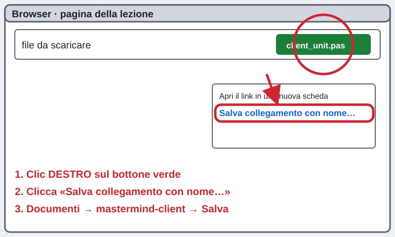
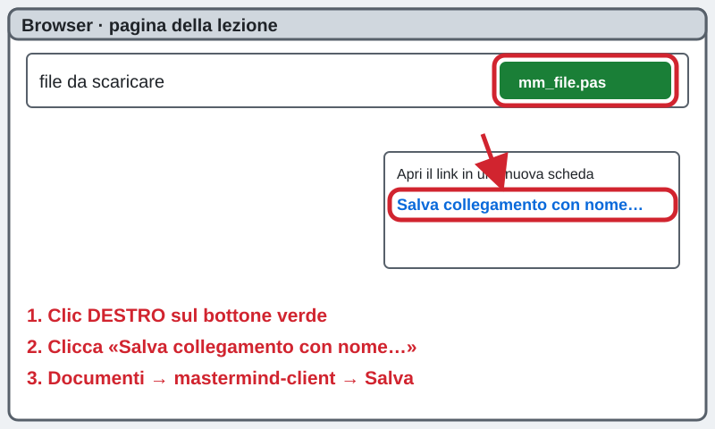
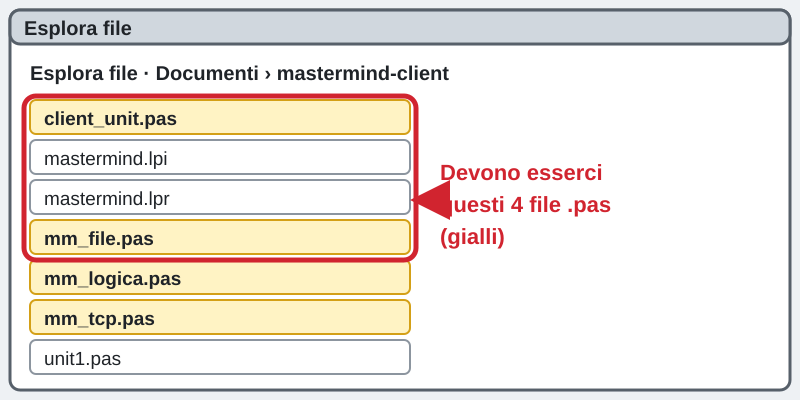
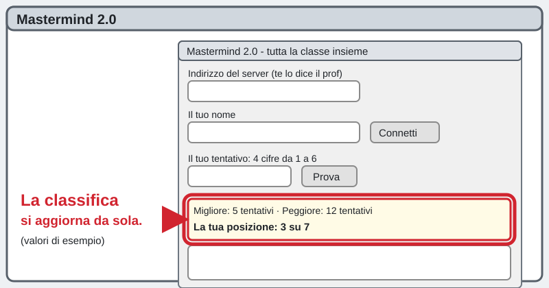

3INF · progetto mastermind-client · si gioca tutti insieme, in rete
Il client del Mastermind: giochiamo tutti insieme
Creazioni di applicazioni con Lazarus
La pagina viene aggiornata spesso durante la lezione: premi F5 per vedere la versione nuova.
সার্ভারের IP ঠিকানা: প্রফেসর বোর্ডে লিখবেন বা এখানে দেখাবেন।
Questo riquadro si aggiorna da solo ogni 30 secondi. La porta è sempre 5050.
Chi sei?
Scrivi nome e cognome: serve al cruscotto per vedere a che punto sei.
Che cosa fai
Costruisci il client del Mastermind: la finestra con cui giochi. Il server (il PC del Prof) pensa un solo codice segreto per tutta la classe e tiene la classifica. Tu provi a indovinarlo e vedi dove sei rispetto ai compagni.
তুমি Mastermind খেলার জানালা (client) বানাবে। প্রফেসরের PC (server) একটা গোপন কোড ঠিক করে, পুরো ক্লাস একসাথে খেলে।
Sei bloccato? Scrivi la tua domanda nella casella dell'assistente in fondo alla pagina: ti risponde subito. Alza la mano solo se il PC non funziona (non si accende, niente rete, Lazarus non si apre).
আটকে গেলে পেজের নিচে সহকারীর বক্সে প্রশ্ন লেখো। শুধু PC কাজ না করলে হাত তোলো।
1Apri Lazarus e crea il progetto
Menu Progetto → Nuovo progetto… → Applicazione → OK. Compare una finestra grigia: è la Form1. FATTO!
Lazarus খোলো। মেনু Progetto → Nuovo progetto… → Applicazione → OK।

2Salva il progetto in una cartella nuova
Menu Progetto → Salva progetto con nome…. A sinistra clicca Documenti, in alto Nuova cartella, scrivi il nome qui sotto, premi Invio e fai doppio clic sulla cartella. In Nome file scrivi mastermind e clicca Salva; per unit1.pas clicca ancora Salva.
Progetto → Salva progetto con nome। Documenti-এ নতুন ফোল্ডার mastermind-client বানাও, ভেতরে ঢুকে নাম mastermind দিয়ে Salva চাপো।
mastermind-client
3Scarica il file client_unit.pas
Questo file è il postino che parla col server. Torna al browser (questa pagina). Fai clic destro sul bottone verde, scegli Salva collegamento con nome…, vai in Documenti → mastermind-client e clicca Salva.
বাটনে ডান ক্লিক করো, «Salva collegamento con nome…» বাছো, Documenti → mastermind-client ফোল্ডারে Salva চাপো।
client_unit.pas
4Scarica il file mm_logica.pas
Questo file è le regole del Mastermind. Torna al browser (questa pagina). Fai clic destro sul bottone verde, scegli Salva collegamento con nome…, vai in Documenti → mastermind-client e clicca Salva.
বাটনে ডান ক্লিক করো, «Salva collegamento con nome…» বাছো, Documenti → mastermind-client ফোল্ডারে Salva চাপো।
mm_logica.pas5Scarica il file mm_file.pas
Questo file è il piano B con i file. Torna al browser (questa pagina). Fai clic destro sul bottone verde, scegli Salva collegamento con nome…, vai in Documenti → mastermind-client e clicca Salva.
বাটনে ডান ক্লিক করো, «Salva collegamento con nome…» বাছো, Documenti → mastermind-client ফোল্ডারে Salva চাপো।
mm_file.pas
6Scarica il file mm_tcp.pas
Questo file è il collegamento in rete. Torna al browser (questa pagina). Fai clic destro sul bottone verde, scegli Salva collegamento con nome…, vai in Documenti → mastermind-client e clicca Salva.
বাটনে ডান ক্লিক করো, «Salva collegamento con nome…» বাছো, Documenti → mastermind-client ফোল্ডারে Salva চাপো।
mm_tcp.pas7Controlla la cartella
Apri Esplora file → Documenti → mastermind-client. Devi vedere i 4 file .pas che hai scaricato (client_unit, mm_logica, mm_file, mm_tcp) più i file del tuo progetto. Se ne manca uno, scaricalo di nuovo dal passo di prima.
ফোল্ডারে ৪টা .pas ফাইল আছে কিনা দেখো। না থাকলে আবার ডাউনলোড করো।

8Incolla il codice di Unit1
Torna a Lazarus. Clicca la scheda Unit1 (il testo del codice; se non la vedi premi F12). Premi Ctrl + A per selezionare tutto. Poi copia il riquadro nero qui sotto con il bottone Copia e premi Ctrl + V in Lazarus. Il vecchio codice sparisce: è giusto così.
Lazarus-এ Unit1 ট্যাবে ক্লিক করো, Ctrl+A চাপো, নিচের কোড কপি করে Ctrl+V দিয়ে বসাও।
unit Unit1;
{ MASTERMIND 2.0 - IL CLIENT DEI RAGAZZI (la finestra).
Tutta la classe gioca INSIEME sulla stessa combinazione segreta, pensata dal
PC del prof (il SERVER). Tu provi, il server ti dice quante cifre sono
"esatte" e quante "spostate", e ti mette in classifica.
I passi del gioco, nell'ordine:
1. Scrivi l'indirizzo del server (te lo dice il prof) e il tuo nome.
2. Premi "Connetti": il programma chiede al server "ci sei?".
3. Scrivi 4 cifre da 1 a 6 e premi "Prova".
4. Ogni 3 secondi la classifica si aggiorna da sola.
Le parti difficili (rete, protocollo) stanno nei file mm_logica, mm_tcp e
client_unit: qui c'e' solo la finestra. }
{$mode objfpc}{$H+}
interface
uses
Classes, SysUtils, Forms, Controls, Graphics, Dialogs, StdCtrls, ExtCtrls,
mm_logica, mm_tcp, client_unit;
type
TForm1 = class(TForm)
LblTitoloServer: TLabel; // scritta sopra l'indirizzo
LblTitoloNome: TLabel; // scritta sopra il nome
LblTitoloTentativo: TLabel; // scritta sopra il tentativo
EdServer: TEdit; // indirizzo del server, per esempio 192.168.10.5:5050
EdNome: TEdit; // il tuo nome
BtnConnetti: TButton; // "Connetti"
EdTentativo: TEdit; // le 4 cifre che provi
BtnProva: TButton; // "Prova"
LblStato: TLabel; // dice se sei collegato al server
LblEsito: TLabel; // risultato dell'ultimo tentativo
LblClassifica: TLabel; // migliore e peggiore della classe
LblPosizione: TLabel; // la tua posizione
MemoStoria: TMemo; // tutti i tuoi tentativi
Timer1: TTimer; // ogni 3 secondi chiede la classifica
procedure FormCreate(Sender: TObject);
procedure BtnConnettiClick(Sender: TObject);
procedure BtnProvaClick(Sender: TObject);
procedure Timer1Timer(Sender: TObject);
private
Cl: TMMClient; // il "postino": parla con il server
UltimoTentativo: String; // le cifre appena inviate
InAttesa: Boolean; // True se stiamo aspettando una risposta
procedure RispostaConnessione(Sender: TObject);
procedure RispostaTentativo(Sender: TObject);
procedure RispostaClassifica(Sender: TObject);
procedure AggiornaClassifica; // scrive migliore, peggiore e posizione
public
end;
var
Form1: TForm1;
implementation
{$R *.lfm}
{ Parte quando si apre il programma }
procedure TForm1.FormCreate(Sender: TObject);
begin
Cl := TMMClient.Create;
Cl.Modo := moRete; // useremo la rete (TCP)
InAttesa := False;
BtnProva.Enabled := False; // si accende solo dopo "Connetti"
Timer1.Enabled := False; // parte solo dopo "Connetti"
LblStato.Caption := 'Non collegato. Scrivi il tuo nome e premi Connetti.';
LblEsito.Caption := '';
LblClassifica.Caption := 'Classifica: appare dopo Connetti';
LblPosizione.Caption := '';
end;
{ Passo 2: il bottone Connetti }
procedure TForm1.BtnConnettiClick(Sender: TObject);
var
testo: String;
k: Integer;
begin
if PulisciNome(EdNome.Text) = '' then
begin
LblStato.Caption := 'Scrivi prima il tuo nome!';
Exit;
end;
// l'indirizzo e' del tipo IP:PORTA (se manca la porta usiamo 5050)
testo := Trim(EdServer.Text);
k := Pos(':', testo);
if k = 0 then
begin
Cl.Host := testo;
Cl.Porta := 5050;
end
else
begin
Cl.Host := Trim(Copy(testo, 1, k - 1));
Cl.Porta := StrToIntDef(Trim(Copy(testo, k + 1, 10)), 5050);
end;
Cl.Nome := EdNome.Text;
LblStato.Caption := 'Mi collego al server...';
BtnConnetti.Enabled := False;
// la domanda parte in un THREAD (un aiutante): la finestra non si blocca
TMMRichiestaAsync.Create(Cl.Host, Cl.Porta, Cl.RigaStato, @RispostaConnessione);
end;
{ Il server ha risposto alla domanda "ci sei?" }
procedure TForm1.RispostaConnessione(Sender: TObject);
var
R: TRisposta;
begin
R := Cl.ApplicaRisposta(TMMRichiestaAsync(Sender).Risposta);
if R.Tipo = 'STATO' then
begin
LblStato.Caption := 'Collegato come ' + PulisciNome(EdNome.Text) + '! Giochiamo.';
EdNome.Enabled := False; // il nome non si cambia piu'
EdServer.Enabled := False;
BtnProva.Enabled := True;
Timer1.Enabled := True;
AggiornaClassifica;
end
else
begin
LblStato.Caption := 'Non trovo il server. Controlla l''indirizzo e riprova.';
BtnConnetti.Enabled := True; // si puo' riprovare, nessun problema!
end;
end;
{ Passo 3: il bottone Prova }
procedure TForm1.BtnProvaClick(Sender: TObject);
begin
if InAttesa then Exit; // un tentativo alla volta
UltimoTentativo := Trim(EdTentativo.Text);
if not CodiceValido(UltimoTentativo) then
begin
LblEsito.Caption := 'Scrivi 4 cifre, ognuna da 1 a 6 (per esempio 1234)';
Exit;
end;
InAttesa := True;
LblEsito.Caption := 'Invio al server...';
TMMRichiestaAsync.Create(Cl.Host, Cl.Porta, Cl.RigaProva(UltimoTentativo), @RispostaTentativo);
end;
{ Il server ha risposto al tentativo }
procedure TForm1.RispostaTentativo(Sender: TObject);
var
R: TRisposta;
begin
InAttesa := False;
R := Cl.ApplicaRisposta(TMMRichiestaAsync(Sender).Risposta);
LblEsito.Caption := Cl.TestoRisposta(R); // per esempio "Esatte: 1 Spostate: 2"
if (R.Tipo = 'RESULT') or (R.Tipo = 'WIN') then
begin
MemoStoria.Lines.Add(IntToStr(R.Sintesi.Tentativi) + ') ' + UltimoTentativo +
' esatte: ' + IntToStr(R.Esatte) + ' spostate: ' + IntToStr(R.Spostate));
EdTentativo.Clear;
end;
if R.Tipo = 'WIN' then
begin
MemoStoria.Lines.Add('*** INDOVINATO! ***');
BtnProva.Enabled := False; // hai finito, ora guardi la classifica
end;
AggiornaClassifica;
end;
{ Ogni 3 secondi: chiedo solo la classifica (nessun tentativo) }
procedure TForm1.Timer1Timer(Sender: TObject);
begin
TMMRichiestaAsync.Create(Cl.Host, Cl.Porta, Cl.RigaStato, @RispostaClassifica);
end;
procedure TForm1.RispostaClassifica(Sender: TObject);
begin
Cl.ApplicaRisposta(TMMRichiestaAsync(Sender).Risposta);
AggiornaClassifica;
end;
{ Scrive nelle due etichette cio' che il server ci ha detto }
procedure TForm1.AggiornaClassifica;
begin
LblClassifica.Caption := Cl.Console;
if Cl.Ultima.Posizione > 0 then
LblPosizione.Caption := 'La tua posizione: ' + IntToStr(Cl.Ultima.Posizione) +
' su ' + IntToStr(Cl.Ultima.Totale)
else
LblPosizione.Caption := 'La tua posizione: non hai ancora indovinato';
end;
end.

9Incolla la finestra del gioco
Fai clic destro sulla finestra grigia (Form1) e scegli la voce del sorgente (.lfm) (il nome può cambiare un po' tra le versioni di Lazarus). Premi Ctrl + A. Copia il riquadro nero qui sotto con il bottone Copia e premi Ctrl + V. Poi fai ancora clic destro e torna alla finestra: compare il Mastermind!
ফর্মে ডান ক্লিক করে (.lfm) সোর্স খোলো, Ctrl+A, নিচের কোড কপি করে Ctrl+V। আবার ডান ক্লিক করে ফর্মে ফিরে যাও।
object Form1: TForm1
Left = 300
Height = 560
Top = 120
Width = 520
Caption = 'Mastermind 2.0 - tutta la classe insieme'
ClientHeight = 560
ClientWidth = 520
OnCreate = FormCreate
LCLVersion = '4.2.0.0'
object LblTitoloServer: TLabel
Left = 16
Height = 17
Top = 12
Width = 300
Caption = 'Indirizzo del server (te lo dice il prof)'
ParentColor = False
end
object EdServer: TEdit
Left = 16
Height = 34
Top = 32
Width = 260
Font.Height = -19
ParentFont = False
TabOrder = 0
Text = '192.168.10.5:5050'
end
object LblTitoloNome: TLabel
Left = 16
Height = 17
Top = 76
Width = 300
Caption = 'Il tuo nome'
ParentColor = False
end
object EdNome: TEdit
Left = 16
Height = 34
Top = 96
Width = 260
Font.Height = -19
MaxLength = 20
ParentFont = False
TabOrder = 1
Text = ''
end
object BtnConnetti: TButton
Left = 296
Height = 34
Top = 96
Width = 200
Caption = 'Connetti'
OnClick = BtnConnettiClick
TabOrder = 2
end
object LblStato: TLabel
Left = 16
Height = 40
Top = 140
Width = 480
AutoSize = False
Caption = ''
Font.Height = -15
ParentColor = False
ParentFont = False
WordWrap = True
end
object LblTitoloTentativo: TLabel
Left = 16
Height = 17
Top = 190
Width = 300
Caption = 'Il tuo tentativo: 4 cifre da 1 a 6'
ParentColor = False
end
object EdTentativo: TEdit
Left = 16
Height = 34
Top = 210
Width = 130
Font.Height = -20
MaxLength = 4
ParentFont = False
TabOrder = 3
Text = ''
end
object BtnProva: TButton
Left = 160
Height = 34
Top = 210
Width = 100
Caption = 'Prova'
OnClick = BtnProvaClick
TabOrder = 4
end
object LblEsito: TLabel
Left = 16
Height = 30
Top = 256
Width = 480
AutoSize = False
Caption = ''
Font.Height = -19
ParentColor = False
ParentFont = False
WordWrap = True
end
object MemoStoria: TMemo
Left = 16
Height = 170
Top = 296
Width = 480
ReadOnly = True
ScrollBars = ssAutoVertical
TabOrder = 5
end
object LblClassifica: TLabel
Left = 16
Height = 40
Top = 476
Width = 480
AutoSize = False
Caption = ''
Font.Height = -15
ParentColor = False
ParentFont = False
WordWrap = True
end
object LblPosizione: TLabel
Left = 16
Height = 28
Top = 520
Width = 480
AutoSize = False
Caption = ''
Font.Height = -19
ParentColor = False
ParentFont = False
WordWrap = True
end
object Timer1: TTimer
Enabled = False
Interval = 3000
OnTimer = Timer1Timer
Left = 440
Top = 200
end
end

10Fai partire il programma
Premi F9. Dopo qualche secondo compare la finestra Mastermind 2.0. Se Lazarus ti chiede di salvare, clicca Salva.
F9 চাপো। কিছুক্ষণ পরে Mastermind 2.0 উইন্ডো আসবে।

11Scrivi il server e il tuo nome
Nel programma, nella prima casella cancella quello che c'è (clic dentro, Ctrl + A, Cancella) e scrivi l'indirizzo del server qui sotto, con :5050 alla fine. Nella seconda casella scrivi il tuo nome e cognome.
প্রথম বাক্সে সার্ভারের ঠিকানা (IP) আর :5050 লেখো। দ্বিতীয় বাক্সে নিজের নাম লেখো।
Copia questo indirizzo e incollalo (Ctrl + V) nella prima casella:
L'indirizzo del server non c'è ancora: lo scrive il Prof. Guarda il riquadro grande in alto: appare da solo.

12Premi Connetti
Clicca il bottone Connetti. Se tutto va bene, sotto compare: Collegato come… Giochiamo.
«Connetti» বাটন চাপো। «Collegato come…» লেখা আসবে।

13Prova a indovinare il codice
Il Prof preme il Via per tutta la classe (prima del Via il programma dice «Aspetta il Via del prof…»). Scrivi 4 cifre da 1 a 6 (per esempio 1234) e clicca Prova. Esatte = cifre giuste al posto giusto. Spostate = cifre giuste ma al posto sbagliato. Riprova finché indovini: il codice è lo stesso per tutta la classe!
শুরুর সংকেতের পর ১ থেকে ৬ এর মধ্যে ৪টা সংখ্যা লেখো, Prova চাপো। Esatte = ঠিক জায়গায় ঠিক সংখ্যা। Spostate = সংখ্যা ঠিক, জায়গা ভুল।

14Guarda la classifica
Sotto i tentativi, ogni 3 secondi il programma aggiorna da solo la classifica: il migliore (meno tentativi), il peggiore e la tua posizione. Dopo che hai indovinato, resti in classifica con il tuo risultato.
ক্লাসের তালিকা নিজে নিজে বদলায়: সেরা, সবচেয়ে খারাপ, আর তোমার জায়গা।

15Fai lo screenshot
Premi Win + Shift + S, seleziona la finestra del gioco con la classifica, poi Ctrl + S: salva in Documenti → mastermind-client con il nome qui sotto.
Win+Shift+S দিয়ে গেমের উইন্ডোর ছবি নাও। Ctrl+S, mastermind-client ফোল্ডারে নিচের নামে Salva।
client_screenshot.png
16Consegna
Manda al Prof lo screenshot e unit1.pas (la cartella mastermind-client).
প্রফেসরকে ছবি আর unit1.pas পাঠাও।
Il bottone per consegnare lo attiva il Prof appena è pronto: comparirà qui.

Se non va
কাজ না করলে নিচে দেখো। দরকার হলে সহকারীকে লেখো।
Il server non è ancora acceso, oppure la porta è sbagliata. Controlla che alla fine dell'indirizzo ci sia :5050. Aspetta un minuto e premi di nuovo Connetti: non succede niente di grave.
L'indirizzo è sbagliato (una cifra o un punto), oppure il firewall del PC del Prof blocca. Confronta con il riquadro grande in alto, cifra per cifra. Se è uguale, scrivi all'assistente.
La seconda casella è vuota. Scrivi nome e cognome, poi premi Connetti.
Va tutto bene. Aspetta che il Prof prema il Via.
Manca un file .pas nella cartella mastermind-client. Rifai i passi da 3 a 7 e scarica quello che manca.
Per qualsiasi altro problema: scrivi nella casella dell'assistente in fondo alla pagina.
Piano B: se la rete non funziona proprio
Il Prof ti dice come giocare con i file condivisi al posto della rete. Resta su questa pagina: lo scrive qui.
নেটওয়ার্ক একদম না চললে প্রফেসর ফাইলের মাধ্যমে খেলার উপায় বলবেন।
La pagina viene aggiornata spesso durante la lezione: premi F5 per vedere la versione nuova.